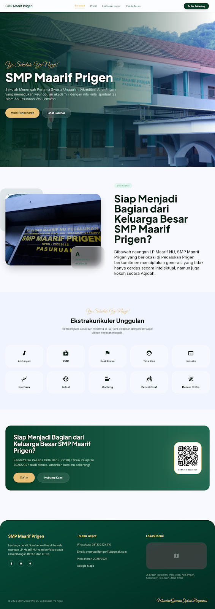

Mewujudkan generasi cerdas yang berpegang teguh pada nilai Islam Ahlussunnah Wal Jama'ah.
Daftar Sekarang
Terletak di Kec. Prigen, kami menyediakan lingkungan belajar yang asri dan religius untuk mendukung tumbuh kembang siswa secara maksimal.